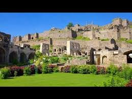

 Golkonda, also known as Golconda, Gol konda ("Round shaped hill"), or Golla konda, (Shepherds Hill) is a citadel and fort in Southern India and was the capital of the medieval sultanate of the Qutb Shahi dynasty (c.1518–1687), is situated 11 kilometres (6.8 mi) west of Hyderabad. HYDRABAD
The Charminar ("Four Minarets"), constructed in 1591, is a monument and mosque located in Hyderabad,Telangana,India. The landmark has become a global icon of Hyderabad, listed among the most recognized structures of India. Charminar is a historical place with mosque on top floor since 400 years and also famous for its surrounding markets. It is one of the tourist attraction in hyderabad.
The Ramoji Film City in India is located in Hyderabad. At 2000 acres, it is the largest integrated film city in the Telangana and the largest studio complex in the world. The film city was also certified by the Guinness World Records as the world’s largest Film Studio complex.